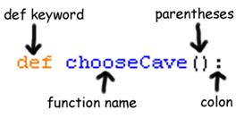
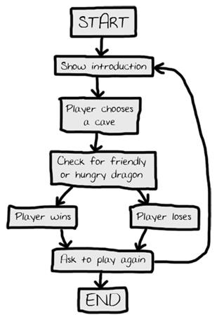

|
|
Chapter 6 |
Dragon Realm |
Topics Covered In This Chapter:
· The time.sleep() function
· Creating your own functions with the def keyword
· The return keyword
· The and, or, and not Boolean operators
· Truth tables
· Global and local variable scope
· Parameters and Arguments
· Flow charts
You’ve already used a few functions: print(), input(), random.randint(), str(), and int(). You’ve called these functions to execute the code inside them. In this chapter, you’ll write your own functions for your programs to call. A function is like a mini-program inside a program.
Functions let you run the same code multiple times without duplicating the source code several times. Instead, you can put that code inside a function and call the function several times. This has the added benefit that if the function’s code has a mistake, you only have one place in the program to change it.
The game you will create in this chapter is called “Dragon Realm”. The player decides between two caves which hold either treasure or certain doom.
In this game, the player is in a land full of dragons. The dragons all live in caves with their large piles of collected treasure. Some dragons are friendly and share their treasure with you. Other dragons are hungry and eat anyone who enters their cave. The player is in front of two caves, one with a friendly dragon and the other with a hungry dragon. The player must choose between the two.
Open a new file editor window by clicking on the File ► New Window. In the blank window that appears type in the source code and save it as dragon.py. Then run the program by pressing F5.
You are in a land full of dragons. In front of you,
you see two caves. In one cave, the dragon is friendly
and will share his treasure with you. The other dragon
is greedy and hungry, and will eat you on sight.
Which cave will you go into? (1 or 2)
1
You approach the cave...
It is dark and spooky...
A large dragon jumps out in front of you! He opens his jaws and...
Gobbles you down in one bite!
Do you want to play again? (yes or no)
no
IMPORTANT NOTE! The programs in this book will only run on Python 3, not Python 2. When the IDLE window starts, it will say something like “Python 3.4.2” at the top. If you have Python 2 installed, you can have Python 3 installed at the same time. To download Python 3, go to https://python.org/download/.
If you get errors after typing this code in, compare the code you typed to the book’s code with the online diff tool at http://invpy.com/diff/dragon.
dragon.py
1. import random
2. import time
3.
4. def displayIntro():
5. print('You are in a land full of dragons. In front of you,')
6. print('you see two caves. In one cave, the dragon is friendly')
7. print('and will share his treasure with you. The other dragon')
8. print('is greedy and hungry, and will eat you on sight.')
9. print()
10.
11. def chooseCave():
12. cave = ''
13. while cave != '1' and cave != '2':
14. print('Which cave will you go into? (1 or 2)')
15. cave = input()
16.
17. return cave
18.
19. def checkCave(chosenCave):
20. print('You approach the cave...')
21. time.sleep(2)
22. print('It is dark and spooky...')
23. time.sleep(2)
24. print('A large dragon jumps out in front of you! He opens his jaws and...')
25. print()
26. time.sleep(2)
27.
28. friendlyCave = random.randint(1, 2)
29.
30. if chosenCave == str(friendlyCave):
31. print('Gives you his treasure!')
32. else:
33. print('Gobbles you down in one bite!')
34.
35. playAgain = 'yes'
36. while playAgain == 'yes' or playAgain == 'y':
37.
38. displayIntro()
39.
40. caveNumber = chooseCave()
41.
42. checkCave(caveNumber)
43.
44. print('Do you want to play again? (yes or no)')
45. playAgain = input()
How the Code Works
Let’s look at the source code in more detail.
1. import random
2. import time
This program imports two modules. The random module will provide the random.randint() function like it did in the “Guess the Number” game. You will also want time-related functions that the time module includes, so line 2 imports the time module.
4. def displayIntro():
5. print('You are in a land full of dragons. In front of you,')
6. print('you see two caves. In one cave, the dragon is friendly')
7. print('and will share his treasure with you. The other dragon')
8. print('is greedy and hungry, and will eat you on sight.')
9. print()
Line 4 is a def statement. The def statement defines a new function that you can call later in the program. When you define this function, you specify the instructions in its def-block. When you call this function, the code inside the def-block executes.
Figure 6-1 shows the parts of a def statement. It has the def keyword followed by a function name with parentheses and then a colon (the : sign). The block after the def statement is called the def-block.

Figure 6-1: Parts of a def statement.
Remember, the def statement doesn’t execute the code. It only defines what code to execute when you call the function. When the execution reaches a def statement it skips down to the first line after the def-block.
But when the displayIntro() function is called (such as on line 38), the execution moves inside of the displayIntro() function to the first line of the def-block.
38. displayIntro()
Then all of the print() calls are run and the “You are in a land full of dragons...” introduction is displayed.
Where to Put Function Definitions
A function's def statement and the def-block must come before you call the function. This is like how you must assign a value to a variable before you use the variable. If you put the function call before the function definition, you’ll get an error. For example, look at this code:
sayGoodbye()
def sayGoodbye():
print('Goodbye!')
If you try to run it, Python will give you an error message that looks like this:
Traceback (most recent call last):
File "C:\Python34\spam.py", line 1, in <module>
sayGoodbye()
NameError: name 'sayGoodbye' is not defined
To fix this, put the function definition before the function call:
def sayGoodbye():
print('Goodbye!')
sayGoodbye()
Defining the chooseCave() Function
11. def chooseCave():
Line 11 defines another function called chooseCave(). This function’s code asks the player which cave they want to go in, either 1 or 2.
12. cave = ''
13. while cave != '1' and cave != '2':
This function needs to make sure the player typed 1 or 2, and not something else. A loop here will keep asking the player until they enter one of these two valid responses. This is called input validation.
Line 12 creates a new variable called cave and stores a blank string in it. Then a while loop begins on line 13. The condition contains a new operator you haven't seen before called and. Just like the - or * are mathematical operators, and == or != are comparison operators, the and operator is a Boolean operator.
Boolean logic deals with things that are either True or False. Boolean operators compare values and evaluate to a single Boolean value.
Think of the sentence, “Cats have whiskers and dogs have tails.” “Cats have whiskers” is true and “dogs have tails” is also true, so the entire sentence “Cats have whiskers and dogs have tails” is true.
But the sentence, “Cats have whiskers and dogs have wings” would be false. Even though “cats have whiskers” is true, dogs do not have wings, so “dogs have wings” is false. In Boolean logic, things can only be entirely true or entirely false. Because of the word “and”, the entire sentence is only true if both parts are true. If one or both parts are false, then the entire sentence is false.
The and and or Operators
The and operator in Python is the same. If the Boolean values on both sides of the and keyword are True, then the expression evaluates to True. If either or both of the Boolean values are False, then the expression evaluates to False.
Try entering the following expressions with the and operator into the interactive shell:
>>> True and True
True
>>> True and False
False
>>> False and True
False
>>> False and False
False
>>> spam = 'Hello'
>>> 10 < 20 and spam == 'Hello'
True
The or operator is similar to the and operator, except it will evaluate to True if either of the two Boolean values are True. The only time the or operator evaluates to False is if both of the Boolean values are False.
Try entering the following into the interactive shell:
>>> True or True
True
>>> True or False
True
>>> False or True
True
>>> False or False
False
>>> 10 > 20 or 20 > 10
True
The not Operator
The not operator only works on one value, instead of combining two values. The not operator evaluates to the opposite Boolean value. The expression not True will evaluate to False and not False will evaluate to True.
Try entering the following into the interactive shell:
>>> not True
False
>>> not False
True
>>> not ('black' == 'white')
True
Truth Tables
If you ever forget how the Boolean operators work, you can look at these truth tables:
Table 6-1: The and operator's truth table.
|
A |
and |
B |
is |
Entire statement |
|
True |
and |
True |
is |
True |
|
True |
and |
False |
is |
False |
|
False |
and |
True |
is |
False |
|
False |
and |
False |
is |
False |
Table 6-2: The or operator's truth table.
|
A |
or |
B |
is |
Entire statement |
|
True |
or |
True |
is |
True |
|
True |
or |
False |
is |
True |
|
False |
or |
True |
is |
True |
|
False |
or |
False |
is |
False |
Table 6-3: The not operator's truth table.
|
not A |
is |
Entire statement |
|
not True |
is |
False |
|
not False |
is |
True |
Evaluating Boolean Operators
Look at line 13 again:
13. while cave != '1' and cave != '2':
The condition has two parts connected by the and Boolean operator. The condition is True only if both parts are True.
The first time the while statement’s condition is checked, cave is set to the blank string, ''. The blank string is not equal to the string '1', so the left side evaluates to True. The blank string is also not equal to the string '2', so the right side evaluates to True.
So the condition then turns into True and True. Because both values are True, the condition finally evaluates to True. So the program execution enters the while-block.
This is what the evaluation looks like (if the value of cave is the blank string):
while cave != '1' and cave != '2':
▼
while '' != '1' and cave != '2':
▼
while True and cave != '2':
▼
while True and '' != '2':
▼
while True and True:
▼
while True:
Getting the Player’s Input
13. while cave != '1' and cave != '2':
14. print('Which cave will you go into? (1 or 2)')
15. cave = input()
Line 14 asks the player which cave they choose. Line 15 lets the player type the response and hit enter. This response is stored in cave. After this code is executed, the execution loops back to the top of the while statement and rechecks the condition.
If the player typed in 1 or 2, then cave will either be '1' or '2' (since input() always returns strings). This makes the condition False, and the program execution will continue past the while loop. For example, if the user entered '1' then the evaluation would look like this:
while cave != '1' and cave != '2':
▼
while '1' != '1' and cave != '2':
▼
while False and cave != '2':
▼
while False and '1' != '2':
▼
while False and True:
▼
while False:
But if the player typed 3 or 4 or HELLO, that response would be invalid. The condition will be True and enters the while-block to ask the player again. The program will keep asking until the player types 1 or 2. This will guarantee that once the execution moves on, the cave variable contains a valid response.
17. return cave
This is a return statement, which only appears inside def-blocks. Remember how the input() function returns a string value that the player typed in? The chooseCave() function will also return a value. Line 17 returns the string that is stored in cave, either '1' or '2'.
Once the return statement executes, the program execution jumps immediately out of the def-block. (This is like how the break statement will make the execution jump out of a while-block.) The program execution moves back to the line with the function call. The function call itself will evaluate to the return value.
Skip down and look at line 40 for a moment:
40. caveNumber = chooseCave()
When the chooseCave() is later called by the program on line 40, the return value is stored in the caveNumber variable. The while loop guarantees that chooseCave() will only return either '1' or '2' as its return value.
So when line 17 returns a string, the function call on line 40 evaluates to this string, which is then stored in caveNumber.
Your program’s variables are forgotten after the program terminates. The variables created while the execution is inside a function call are the same. The variables are created when the function is called and forgotten when the function returns. Remember, functions are kind of like mini-programs in your program.
When execution is inside a function, you cannot change the variables outside of the function, including variables inside other functions. This is because these variables exist in a different “scope”. All variables exist in either the global scope or a function call’s local scope.
The scope outside of all functions is called the global scope. The scope inside of a function (for the duration of a particular function call) is called a local scope.
The entire program has only one global scope. Variables defined in the global scope can be read outside and inside functions, but can only be modified outside of all functions. Variables created in a function call can only be read or modified during that function call.
You can read the value of global variables from the local scope, but attempting to change a global variable from the local scope won’t work. What Python actually does in that case is create a local variable with the same name as the global variable. You could, for example, have a local variable named spam at the same time as having a global variable named spam. Python will consider these to be two different variables.
Look at this example to see what happens when you try to change a global variable from inside a local scope. The comments explain what is going on:
def bacon():
# We create a local variable named "spam"
# instead of changing the value of the global
# variable "spam":
spam = 99
# The name "spam" now refers to the local
# variable only for the rest of this
# function:
print(spam) # 99
spam = 42 # A global variable named "spam":
print(spam) # 42
bacon() # Call the bacon() function:
# The global variable was not changed in funky():
print(spam) # 42
When run, this code will output the following:
42
99
42
Where a variable is created determines what scope it is in. When the Dragon Realm program first executes the line:
12. cave = ''
...the variable cave is created inside the chooseCave() function. This means it is created in the chooseCave() function’s local scope. It will be forgotten when chooseCave() returns, and will be recreated if chooseCave() is called a second time. The value of a local variable isn’t remembered between function calls.
19. def checkCave(chosenCave):
The next function the program defines is named checkCave(). Notice the text chosenCave between the parentheses. This is a parameter: a local variable that is assigned the argument passed when this function is called.
Remember how for some function calls like str() or randint(), you would pass one or more arguments between the parentheses:
>>> str(5)
'5'
>>> random.randint(1, 20)
14
You will also pass an argument when you call checkCave(). This argument is stored in a new variable named chosenCave. These variables are also called parameters.
For example, here is a short program that demonstrates defining a function with a parameter:
def sayHello(name):
print('Hello, ' + name + '. Your name has ' + str(len(name)) + 'letters.')
sayHello('Alice')
sayHello('Bob')
spam = 'Carol'
sayHello(spam)
If you run this program, it would look like this:
Hello, Alice. Your name has 5 letters.
Hello, Bob. Your name has 3 letters.
Hello, Carol. Your name has 5 letters.
When you call sayHello(), the argument is assigned to the name parameter. Parameters are just ordinary local variables. Like all local variables, the values in parameters will be forgotten when the function call returns.
Displaying the Game Results
Back to the game’s source code:
20. print('You approach the cave...')
21. time.sleep(2)
The time module has a function called sleep() that pauses the program. Line 21 passes the integer value 2 so that time.sleep() will pause the program for 2 seconds.
22. print('It is dark and spooky...')
23. time.sleep(2)
Here the code prints some more text and waits for another 2 seconds. These short pauses add suspense to the game, instead of displaying the text all at once. In the previous chapter’s Jokes program, you called the input() function to pause until the player pressed the enter key. Here, the player doesn’t have to do anything except wait a couple seconds.
24. print('A large dragon jumps out in front of you! He opens his jaws and...')
25. print()
26. time.sleep(2)
What happens next? And how does the program decide? This is explained in the next section.
Deciding Which Cave has the Friendly Dragon
28. friendlyCave = random.randint(1, 2)
Line 28 calls the random.randint() function which will return either 1 or 2. This integer value is stored in friendlyCave and is the cave with the friendly dragon.
30. if chosenCave == str(friendlyCave):
31. print('Gives you his treasure!')
Line 30 checks if the player’s chosen cave in the chosenCave variable ('1' or '2') is equal to the friendly dragon cave.
But the value in friendlyCave is an integer because random.randint() returns integers. You can’t compare strings and integers with the == sign, because they will always be not equal to each other. '1' is not equal to 1 and '2' is not equal to 2.
So friendlyCave is passed to str() function, which returns the string value of friendlyCave. This way the values will be the same data type and can be meaningfully compared to each other. This code could also have been used to convert chosenCave to an integer value:
if int(chosenCave) == friendlyCave:
If the condition is True, line 31 tells the player they have won the treasure.
32. else:
33. print('Gobbles you down in one bite!')
Line 32 is an else statement. The else statement can only come after an if-block. The else-block executes if the if statement’s condition was False. Think of it as the program’s way of saying, “If this condition is true then execute the if-block or else execute the else-block.”
Remember to put the colon (the : sign) after the else keyword.
Where the Main Part Begins
35. playAgain = 'yes'
36. while playAgain == 'yes' or playAgain == 'y':
Line 35 is the first line that isn’t a def statement or inside a def-block. This line is where the main part of the program begins. The previous def statements merely defined the functions. They didn’t run the code inside of the functions.
Line 35 and 36 are setting up a loop that the rest of the game code is in. At the end of the game, the player can enter if they want to play again. If they do, the execution enters the while loop to run the entire game all over again. If they don’t, the while statement’s condition will be False and the execution will move on to the end of the program and terminate.
The first time the execution comes to this while statement, line 35 will have just assigned 'yes' to the playAgain variable. That means the condition will be True. This guarantees that the execution enters the loop at least once.
Calling the Functions in the Program
38. displayIntro()
Line 38 calls the displayIntro() function. This isn’t a Python function, it is your function that you defined earlier on line 4. When this function is called, the program execution jumps to the first line in the displayIntro() function on line 5. When all the lines in the function are done, the execution jumps back to line 38 and continues moving down.
40. caveNumber = chooseCave()
Line 40 also calls a function that you defined. Remember that the chooseCave() function lets the player type in the cave they want to go into. When the line 17’s return cave executes, the program execution jumps back to line 40, and the chooseCave() call evaluates to the return value. This return value is stored in a new variable named caveNumber. Then the program execution moves on to line 42.
42. checkCave(caveNumber)
Line 42 calls your checkCave() function, passing the value in caveNumber as an argument. Not only does execution jump to line 20, but the value in caveNumber is copied to the parameter chosenCave inside the checkCave() function. This is the function that will display either 'Gives you his treasure!' or 'Gobbles you down in one bite!' depending on the cave the player chose to go into.
Asking the Player to Play Again
44. print('Do you want to play again? (yes or no)')
45. playAgain = input()
Whether the player won or lost, they are asked if they want to play again. The variable playAgain what the player typed. Line 45 is the last line of the while-block, so the program jumps back to line 36 to check the while loop’s condition: playAgain == 'yes' or playAgain == 'y'
If the player typed in the string 'yes' or 'y', then the execution would enter the loop again at line 38.
If the player typed in 'no' or 'n' or something silly like 'Abraham Lincoln', then the condition would be False. The program execution would continue on to the line after the while-block. But since there are no more lines after the while-block, the program terminates.
One thing to note: the string 'YES' is not equal to the string 'yes'. If the player typed in the string 'YES', then the while statement’s condition would evaluate to False and the program would still terminate. Later programs in this book will show you how to avoid this problem.
You've just completed your second game! In Dragon Realm, you used a lot of what you learned in the Guess the Number game and picked up a few new tricks. If you didn't understand some of the concepts in this program, then go over each line of the source code again, and try changing the source code and see how the program changes.
In the next chapter you won’t create a game, but instead learn how to use a feature of IDLE called the debugger.
Dragon Realm is a simple game. The other games in this book will be a bit more complicated. It sometimes helps to write down everything you want your game or program to do before you start writing code. This is called “designing the program.”
For example, it may help to draw a flow chart. A flow chart is a picture that shows every possible action that can happen in the game, and which actions lead to which other actions. Figure 6-2 is a flow chart for Dragon Realm.
To see what happens in the game, put your finger on the “Start” box. Then follow one arrow from the box to another box. Your finger is like the program execution. The program terminates when your finger lands on the “End” box.
When you get to the “Check for friendly or hungry dragon” box, you can go to the “Player wins” box or the “Player loses” box. This branching point shows how the program can do different things. Either way, both paths will end up at the “Ask to play again” box.
Summary
In the Dragon Realm game, you created your own functions. Functions are a mini-program within your program. The code inside the function runs when the function is called. By breaking up your code into functions, you can organize your code into smaller and easier to understand sections.
Arguments are values copied to the function’s parameters when the function is called. The function call itself evaluates to the return value.

Figure 6-2: Flow chart for the Dragon Realm game.
You also learned about variable scopes. Variables created inside of a function exist in the local scope, and variables created outside of all functions exist in the global scope. Code in the global scope cannot make use of local variables. If a local variable has the same name as a variable in the global scope, Python considers it a separate variable and assigning new values to the local variable won’t change the value in the global variable.
Variable scopes might seem complicated, but they are useful for organizing functions as separate pieces of code from the rest of the program. Because each function has its own local scope, you can be sure that the code in one function won’t cause bugs in other functions.
Almost every program uses functions because they are so useful. By understanding how functions work, you can save yourself a lot of typing and make bugs easier to fix.